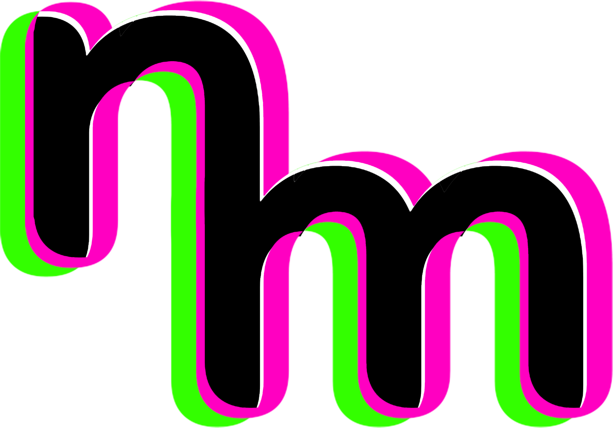

Noisemaker
Visual effects rendering engine for the browser.
shaders demo
live effect browser
docs
integration, specs, case studies
composer demo
cpu presets (python & js)
Noisedeck
An approachable, powerful video synth built on Noisemaker. A must-have for any creator's toolkit.